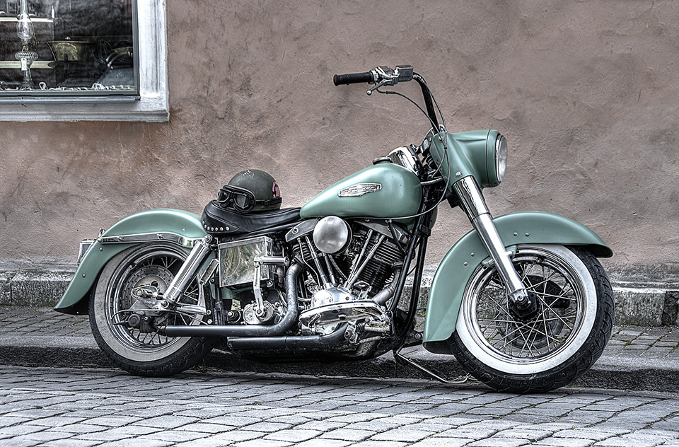

Harley Davidson FLH

Una leyenda sobre ruedas que desafía el tiempo
Harley Davidson Sportster 1200
La Harley Davidson FLH es mucho más que una simple motocicleta; es un ícono del motociclismo que ha dejado una huella imborrable en la historia de las dos ruedas. Con su presencia imponente, su potencia inigualable y su estilo distintivo, la FLH personifica el espíritu de la libertad y la pasión por la carretera.
La Harley Davidson FLH se remonta a sus raíces en los años 60 y 70, cuando esta legendaria motocicleta hizo su primera aparición. Desde entonces, ha sido sinónimo de fuerza, resistencia y prestigio en el mundo del motociclismo. Su diseño clásico, con su amplio carenado frontal, sus alforjas laterales y su asiento de gran tamaño, es instantáneamente reconocible y evoca una sensación de poderío en cada mirada.
Equipada con un motor V-Twin de gran cilindrada, la FLH ofrece una potencia excepcional que se siente con cada aceleración. Su rugido distintivo llena el aire, anunciando la llegada de una máquina poderosa y segura de sí misma. La FLH es sinónimo de potencia bruta, y cada vez que el motor cobra vida, se desencadena una emoción indescriptible que solo aquellos que la han experimentado pueden entender.
Pero la FLH no es solo una motocicleta poderosa, también es un símbolo de comodidad y tecnología. Con su amplio carenado frontal, ofrece una protección excepcional contra el viento y las inclemencias del clima, permitiendo a los motociclistas disfrutar de viajes largos con una comodidad inigualable. Además, cuenta con características modernas como sistemas de audio, conectividad Bluetooth y controles electrónicos avanzados que mejoran aún más la experiencia de conducción.
La Harley Davidson FLH es una invitación a explorar el mundo sin restricciones. Su robusto chasis y su suspensión de calidad brindan estabilidad y control en cualquier tipo de carretera. Ya sea surcando las sinuosas curvas de las montañas o recorriendo largas autopistas, la FLH se adapta a cualquier terreno con confianza y solidez.
Pero más allá de sus características técnicas, la FLH encarna un estilo de vida y una comunidad unida por la pasión por las Harley Davidson. Es un símbolo de libertad y camaradería, que invita a los motociclistas a formar parte de una hermandad que trasciende fronteras y culturas. Cada vez que un grupo de motociclistas se reúne y se pone en marcha sobre sus FLH, se crea un vínculo especial que solo aquellos que han experimentado la libertad sobre dos ruedas pueden entender.
En resumen, la Harley Davidson FLH es una motocicleta legendaria que ha resistido el paso del tiempo. Su diseño imponente, su potencia inigualable y su espíritu de libertad la convierten en una máquina que desafía los límites y evoca emociones indescriptibles. La FLH es una invitación a descubrir la carretera y a experimentar la verdadera esencia de la vida sobre dos ruedas.
La Harley Davidson FLH se remonta a sus raíces en los años 60 y 70, cuando esta legendaria motocicleta hizo su primera aparición. Desde entonces, ha sido sinónimo de fuerza, resistencia y prestigio en el mundo del motociclismo. Su diseño clásico, con su amplio carenado frontal, sus alforjas laterales y su asiento de gran tamaño, es instantáneamente reconocible y evoca una sensación de poderío en cada mirada.
Equipada con un motor V-Twin de gran cilindrada, la FLH ofrece una potencia excepcional que se siente con cada aceleración. Su rugido distintivo llena el aire, anunciando la llegada de una máquina poderosa y segura de sí misma. La FLH es sinónimo de potencia bruta, y cada vez que el motor cobra vida, se desencadena una emoción indescriptible que solo aquellos que la han experimentado pueden entender.
Pero la FLH no es solo una motocicleta poderosa, también es un símbolo de comodidad y tecnología. Con su amplio carenado frontal, ofrece una protección excepcional contra el viento y las inclemencias del clima, permitiendo a los motociclistas disfrutar de viajes largos con una comodidad inigualable. Además, cuenta con características modernas como sistemas de audio, conectividad Bluetooth y controles electrónicos avanzados que mejoran aún más la experiencia de conducción.
La Harley Davidson FLH es una invitación a explorar el mundo sin restricciones. Su robusto chasis y su suspensión de calidad brindan estabilidad y control en cualquier tipo de carretera. Ya sea surcando las sinuosas curvas de las montañas o recorriendo largas autopistas, la FLH se adapta a cualquier terreno con confianza y solidez.
Pero más allá de sus características técnicas, la FLH encarna un estilo de vida y una comunidad unida por la pasión por las Harley Davidson. Es un símbolo de libertad y camaradería, que invita a los motociclistas a formar parte de una hermandad que trasciende fronteras y culturas. Cada vez que un grupo de motociclistas se reúne y se pone en marcha sobre sus FLH, se crea un vínculo especial que solo aquellos que han experimentado la libertad sobre dos ruedas pueden entender.
En resumen, la Harley Davidson FLH es una motocicleta legendaria que ha resistido el paso del tiempo. Su diseño imponente, su potencia inigualable y su espíritu de libertad la convierten en una máquina que desafía los límites y evoca emociones indescriptibles. La FLH es una invitación a descubrir la carretera y a experimentar la verdadera esencia de la vida sobre dos ruedas.
La motocicleta Harley Davidson FLH es conocida por su imponente presencia y su potente rendimiento. Estas son algunas de sus características destacadas:
Motor V-Twin: La FLH está equipada con un motor V-Twin de gran cilindrada que proporciona una potencia y un torque impresionantes. Este diseño de motor icónico de Harley Davidson ofrece un rendimiento excepcional y un sonido característico que evoca el espíritu del motociclismo.
Carenado frontal y alforjas: La FLH cuenta con un amplio carenado frontal que ofrece protección contra el viento y las inclemencias del clima. Además, incluye alforjas laterales espaciosas para almacenamiento adicional, lo que la convierte en una motocicleta ideal para viajes largos.
Sistema de audio avanzado: Algunos modelos de la FLH vienen equipados con sistemas de audio de alta calidad que ofrecen una experiencia de entretenimiento excepcional durante los viajes. Estos sistemas pueden incluir altavoces integrados y conectividad Bluetooth para reproducir música desde dispositivos móviles.
Suspensión de calidad: La FLH está diseñada con una suspensión de calidad que proporciona una conducción suave y cómoda. Esto permite a los motociclistas disfrutar de viajes largos con mayor comodidad y estabilidad, incluso en terrenos irregulares.
Electrónica avanzada: Algunos modelos más recientes de la FLH cuentan con características electrónicas avanzadas, como controles de crucero, frenos antibloqueo (ABS) y sistemas de control de tracción. Estas tecnologías mejoran la seguridad y el rendimiento general de la motocicleta.
Opciones de personalización: La FLH ofrece una amplia gama de opciones de personalización para que los propietarios puedan adaptarla a sus gustos y preferencias individuales. Desde opciones de pintura personalizada hasta accesorios cromados y asientos personalizados, cada motociclista puede darle un toque único a su FLH.
Comunidad y legado: La FLH es parte de la icónica familia de motocicletas Harley Davidson, lo que significa que también se une a la rica comunidad de propietarios de Harley. Los motociclistas de FLH forman parte de una comunidad apasionada y unida, compartiendo la pasión por la libertad sobre dos ruedas y el legado de la marca.
En resumen, la Harley Davidson FLH es una motocicleta que combina potencia, estilo y comodidad en un solo paquete. Su motor V-Twin, su diseño imponente y sus características avanzadas la convierten en una opción popular para aquellos que buscan una experiencia de conducción potente y emocionante en largos viajes. La FLH es una representación del legado de Harley Davidson y la pasión por el motociclismo.
Motor V-Twin: La FLH está equipada con un motor V-Twin de gran cilindrada que proporciona una potencia y un torque impresionantes. Este diseño de motor icónico de Harley Davidson ofrece un rendimiento excepcional y un sonido característico que evoca el espíritu del motociclismo.
Carenado frontal y alforjas: La FLH cuenta con un amplio carenado frontal que ofrece protección contra el viento y las inclemencias del clima. Además, incluye alforjas laterales espaciosas para almacenamiento adicional, lo que la convierte en una motocicleta ideal para viajes largos.
Sistema de audio avanzado: Algunos modelos de la FLH vienen equipados con sistemas de audio de alta calidad que ofrecen una experiencia de entretenimiento excepcional durante los viajes. Estos sistemas pueden incluir altavoces integrados y conectividad Bluetooth para reproducir música desde dispositivos móviles.
Suspensión de calidad: La FLH está diseñada con una suspensión de calidad que proporciona una conducción suave y cómoda. Esto permite a los motociclistas disfrutar de viajes largos con mayor comodidad y estabilidad, incluso en terrenos irregulares.
Electrónica avanzada: Algunos modelos más recientes de la FLH cuentan con características electrónicas avanzadas, como controles de crucero, frenos antibloqueo (ABS) y sistemas de control de tracción. Estas tecnologías mejoran la seguridad y el rendimiento general de la motocicleta.
Opciones de personalización: La FLH ofrece una amplia gama de opciones de personalización para que los propietarios puedan adaptarla a sus gustos y preferencias individuales. Desde opciones de pintura personalizada hasta accesorios cromados y asientos personalizados, cada motociclista puede darle un toque único a su FLH.
Comunidad y legado: La FLH es parte de la icónica familia de motocicletas Harley Davidson, lo que significa que también se une a la rica comunidad de propietarios de Harley. Los motociclistas de FLH forman parte de una comunidad apasionada y unida, compartiendo la pasión por la libertad sobre dos ruedas y el legado de la marca.
En resumen, la Harley Davidson FLH es una motocicleta que combina potencia, estilo y comodidad en un solo paquete. Su motor V-Twin, su diseño imponente y sus características avanzadas la convierten en una opción popular para aquellos que buscan una experiencia de conducción potente y emocionante en largos viajes. La FLH es una representación del legado de Harley Davidson y la pasión por el motociclismo.